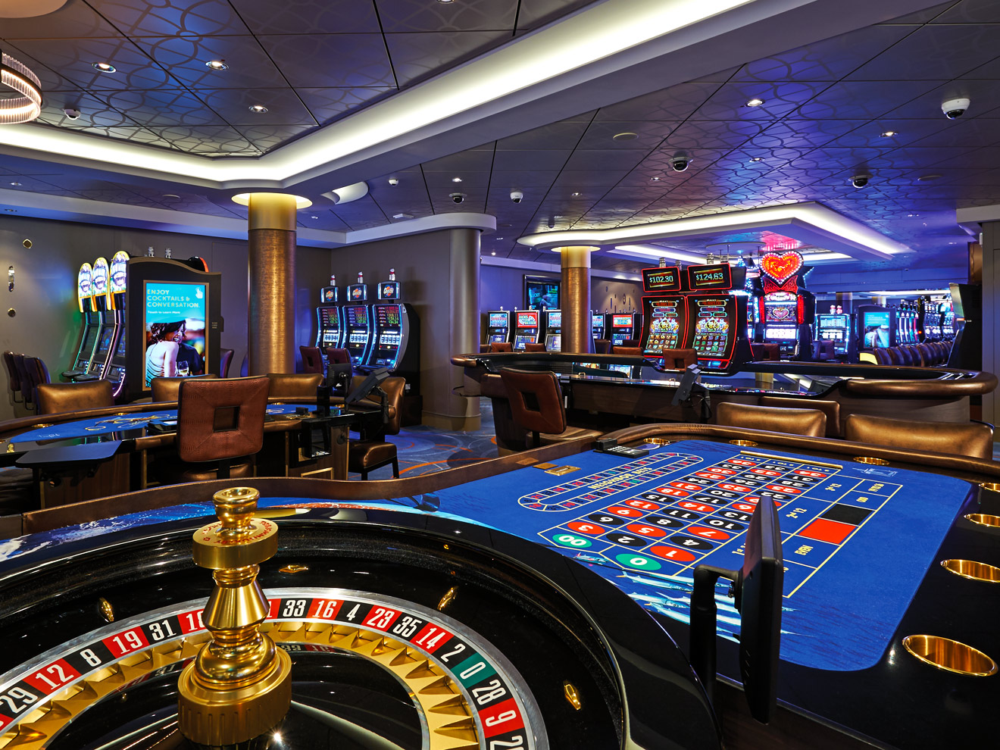
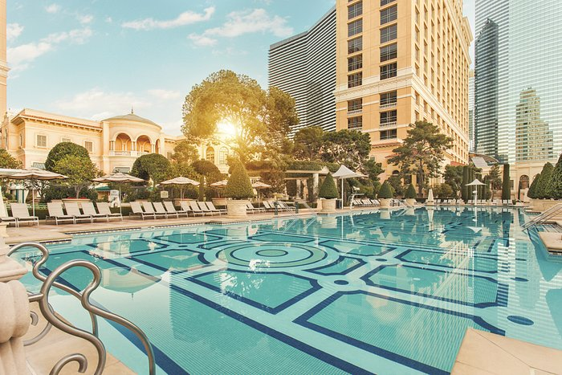
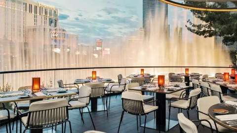

Sobre o Bellagio Hotel Las Vegas
Inaugurado em 15 de outubro de 1998, o Bellagio é um luxuoso hotel e casino da cidade de Las Vegas, Nevada, nos Estados Unidos. O Bellagio localiza-se na famosa Las Vegas Strip em frente ao também requintado Paris Las Vegas. A construção do hotel foi inspirada pelos resorts do Lago de Como, na Itália. Atualmente o Bellagio faz parte do conglomerado de hotéis controlados pela MGM Mirage. Dentre as várias atrações do Bellagio, se destacam os espectáculos de água e luz que oferece aos turistas, tendo como cenário o lago artificial e a fachada do hotel. O Bellagio ainda apresenta o espetáculo "O" do Cirque du Soleil.
No ano de 2001, o Bellagio, junto com uma gama de hotéis da Las Vegas Strip, se tornou propriedade da poderosa MGM Mirage após a fusão da Mirage Resorts e MGM Grand Inc.
O hotel, hoje um dos mais luxuosos dos Estados Unidos, emprega cerca de 10 mil funcionários que trajam uniformes elegantes (como já foi definido por revistas e jornais de moda). O cassino e hotel foi totalmente reformado em 2009.
Atracões
-
Cassino
 -
Piscina
 -
Restaurante
